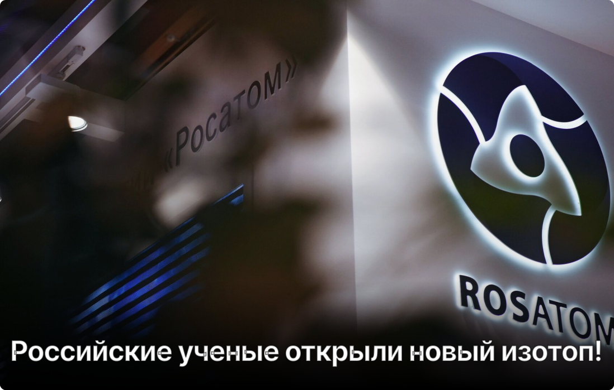

"Росатом" начал производить изотоп, повышающий эффективность лечения рака
Под редакцией студента
Сенсационная новость пришла из мира науки! Российские ученые совершили открытие, которое может перевернуть наше понимание об атомах и их строении. Речь идет о создании нового, ранее неизвестного изотопа элемента московия. Это открытие – важный шаг в изучении ядра атома и может привести к новым прорывам в различных областях науки и техники.
Чтобы понять суть открытия, давайте вспомним немного школьную химию. Все мы знаем, что атомы состоят из протонов, нейтронов и электронов. Протоны определяют, какой это элемент (например, золото, кислород, или московий). Атомы одного и того же элемента могут иметь разное количество нейтронов. Эти "варианты" одного и того же элемента называются изотопами.
Изотопы бывают стабильными (то есть не меняют свое ядро) и нестабильными (радиоактивными, которые распадаются). Изучение изотопов позволяет ученым лучше понять, как устроен атом, как он взаимодействует с другими частицами, и как образуются химические элементы во Вселенной.
Российские ученые из Объединенного института ядерных исследований (ОИЯИ) в Дубне смогли синтезировать новый изотоп московия – 295-Ms. Московий – это очень тяжелый элемент, который был открыт сравнительно недавно. Синтез нового изотопа этого элемента – это сложная и кропотливая работа, требующая применения самых передовых технологий и глубоких знаний в области ядерной физики.
Ученые использовали мощный ускоритель частиц, чтобы разогнать ядра кальция и "столкнуть" их с ядрами америция. В результате этого столкновения и родилось ядро нового изотопа московия. Стоит отметить, что этот процесс напоминает создание новых элементов в "кузнице" звезд, что делает это открытие еще более захватывающим.
Открытие нового изотопа московия – это еще одно доказательство того, что наука не стоит на месте. Российские ученые продемонстрировали свое мастерство и талант, внося свой вклад в общее дело познания мира.
LiBuukus@gmail.com
+7(999)999-99-99